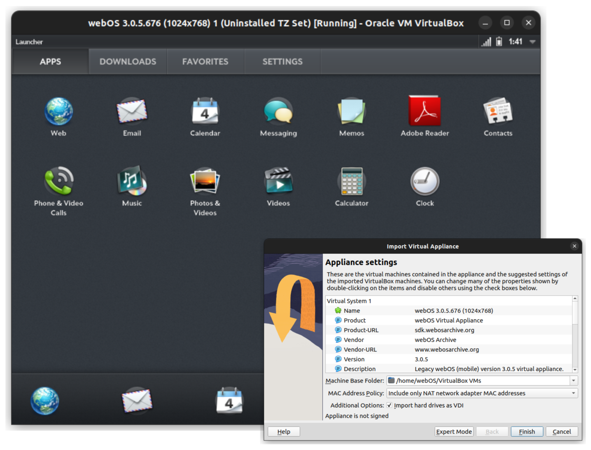

Emulator
The webOS SDK originally provided an emulator for development purposes, with disk images for major releases of the OS. Unfortunately, these were delivered as Java JARs with a corresponding tool to generate the VM in specific versions of VirtualBox.
To make things easier in a modern era, webOS Archive has re-packaged the SDK emulator as an OVA Virtual Appliance that should work on current versions of VirtualBox (and probably other virtualization tools) on current operating systems. This appliance emulates a webOS Touchpad device, with many limitations. If you wish to emulate other webOS devices, you may wish to explore the SDK.

Usage Notes
The emulator includes a Radio Simulator that lets you simulate events in the guest OS.
Keyboard Shortcuts
You can simulate some hardware events and states with keyboard shortcuts:
- End (use Fn+Right Arrow on a Mac): Opens and closes the launcher
- Esc: Performs the back gesture (or swipe back)
- Home (use Fn+Left Arrow on a Mac): Minimizes and maximizes the card
- Left/Right Arrow: Switches the application left or right in the Card view
- F5: Simulate shaking (Not implemented)
- F6: Simulate "up" (12:00 or normal) orientation
- F7: Simulate "down" (6:00) orientation
- F8: Simulate "right" (3:00) orientation
- F9: Simulate "left" (9:00) orientation
Limitations
Since its dervied from the SDK emulator, all the limitations of that emulator apply. From the SDK:
Currently, the Emulator does not support the following:
- Accelerometer live data (does support orientation and shaking events)
- Audio
- Bluetooth (UI and any interface-specific APIs do not work in the Emulator)
- Camera
- Gesture area
- Multi-touch
- Sound
- Video
- Wi-Fi (UI and any interface-specific APIs do not work in the Emulator but, with a desktop connection, network connectivity does.)
Additionally, webOS in a modern era is heavily dependent on a SSL-bump proxy to get around the limitations of its ancient SSL-stack. Unfortunately, the proxy-setting system calls do not appear to be present in the emulated OS, meaning that HTTPS is not available in the emulator.
NOTE: advanced users may be able to manually setup a proxy following these instructions.
Finally, while most webOS SDK apps were cross-platform, some advanced apps and services, and many PDK apps, were processor-specific. As the emulator provides an x86 environment to the guest OS, anything compiled for the hardware-native ARM platform will not work on the emulator.
Preware
Preware needs to be compiled differently for the emulator. The required i686 build can be found here.